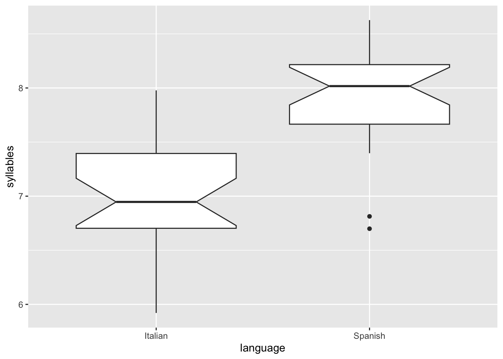

Students will perform a t-test and a Wilcoxon test
Formative quiz
Match each term with its corresponding definition.
Good ol’ fashioned matching quiz
sample
The mean of the sample
population
A value that is the result of converting a value into units of standard deviations from the mean
point estimate
A Greek letter that usually stands for the standard deviation of a continuous variable of the population
confidence interval
A Romanized letter that usually stands for the explanatory variable
standard error
Something that might affect the thing under study
t-test
The thing that is being studied (aka. dependent thing of study)
Wilcoxon test
a Greek letter that usually stands for the mean of a continuous variable of a population
sigma
An ideal spread of data points around the central tendency; looks like a good ol’ fashioned bell (aka. bell curve)
meu
the number of data points (aka. observations)
n
The standard deviation of the sample
x
The group that the researcher want to know something about
y
A non-parametric test
response variable
The group that is used to infer about a larger group
explanatory variable
The proposition that is likely an effect of the explanatory variable on the response variable
z-score
A Romanized letter that usually stands for the response variable.
meu hat
a single number that characterizes an aspect of a dataset
sigma hat
A range of values that is likely to contain the population value
alpha level
The threshold below which the null hypothesis can be rejected
null hypothesis
A parametric test with a continuous response variable and a categorical variable with exactly two levels
alternative hypothesis
A measure of how much uncertainty there is in the estimate of the sample mean
normal distribution
The proposition that there is no effect of the explanatory variable(s) on the response variable
t-test
The response variable is continuous (aka. quantitative) and the explanatory variable is categorical with exactly two levels (aka. values or groups).
Assumptions
The distribution of the response is normal, and/or there are more than 30 data points in each level (aka. group) of the explanatory variable.
The variances of the response variables in both levels of the explanatory are equal. However, this is often not the case and our new friend Mr. Welch proposed an adjustment that provides a correction for unequal variances. The default behavior of the t.test() in R (i.e., the var.equal argument) is to use Welch’s adjustment.
One-tailed or two-tailed
A one-tailed test should be used when the alternative hypothesis is directional, that is, it hypothesizes that the mean of one group is greater than the mean of the other group, or less than the other group. For example, the null and alternative hypotheses would look something like this:
\[
H_0:μ_A = μ_B
\]\[
H_a:μ_A>μ_B
\]
We use a two-tailed t-test when our alternative hypothesis is not directional, that is, it hypothesizes that the mean of one group does not equal the mean of the other group, but it doesn’t say anything about direction. For example:
\[
H_0:μ_A = μ_B
\]\[
H_a:μ_A ≠ μ_B
\]
Wilcoxon test
When the data are not normally distributed (and you don’t have >30 observations in each level of the categorical explanatory variable, so that you can use the t-test), the Wilcoxon test is the way to go. This test is also the way to go when you have ordinal data, like responses to a Likert-scale survey.
The Wilcoxon test is apparently super similar to, or in most cases identifical to, the Mann-Whitney test; see Q&A thread. Our ol’ friend Jamovi has a check box for the “Mann-Whitney” test, while the function in R run these test is wilcox.test().
Question
Let’s look at the speech rate in syllables per second of 25 Spanish speakers and 25 Italian speakers. First, let’s propose a null hypothesis and an alternative hypothesis. As we don’t have any previous information about the speech rate of Spanish and Italian speakers in comparison to each other, our alternative hypothesis will simply be “not equal to” rather than something directional like “greater than” or “less than”:
\[
H_0:μ_S=μ_I
\]\[
H_a:μ_S≠μ_I
\]
First, a good ol’ fashioned boxplot:
library("tidyverse")
── Attaching core tidyverse packages ──────────────────────── tidyverse 2.0.0 ──
✔ dplyr 1.1.4 ✔ readr 2.1.4
✔ forcats 1.0.0 ✔ stringr 1.5.1
✔ ggplot2 3.4.4 ✔ tibble 3.2.1
✔ lubridate 1.9.2 ✔ tidyr 1.3.1
✔ purrr 1.0.2
── Conflicts ────────────────────────────────────────── tidyverse_conflicts() ──
✖ dplyr::filter() masks stats::filter()
✖ dplyr::lag() masks stats::lag()
ℹ Use the conflicted package (<http://conflicted.r-lib.org/>) to force all conflicts to become errors
Rows: 50 Columns: 3
── Column specification ────────────────────────────────────────────────────────
Delimiter: ","
chr (1): language
dbl (2): participant_ID, syllables
ℹ Use `spec()` to retrieve the full column specification for this data.
ℹ Specify the column types or set `show_col_types = FALSE` to quiet this message.
esit %>%ggplot(aes(x = language, y = syllables))+geom_boxplot(notch =TRUE)

The non-overlapping notches on the boxes suggest that the difference in the means of the two groups will likely be statistically significantly different.
Warning: unable to access index for repository http://rstudio.org/src/contrib:
cannot open URL 'http://rstudio.org/src/contrib/PACKAGES'
Warning: package 'moments' is not available for this version of R
A version of this package for your version of R might be available elsewhere,
see the ideas at
https://cran.r-project.org/doc/manuals/r-patched/R-admin.html#Installing-packages
Warning: unable to access index for repository http://rstudio.org/bin/macosx/big-sur-arm64/contrib/4.3:
cannot open URL 'http://rstudio.org/bin/macosx/big-sur-arm64/contrib/4.3/PACKAGES'
Warning: 'tidy.numeric' is deprecated.
See help("Deprecated")
Warning: 'tidy.numeric' is deprecated.
See help("Deprecated")
# A tibble: 2 × 2
# Groups: language [2]
language x
<chr> <dbl>
1 Italian -0.216
2 Spanish -0.923
A good rule of thumb is that if the skewness score is between -0.5 and 0.5, the data is normal enough to continue with a parametric test.
Because the Shapiro-Wilk gave us the green light to continue with a t-test, let’s go!
esit %>%t.test(syllables~language, data = ., alternative ="two.sided") -> resultprint(result)
Welch Two Sample t-test
data: syllables by language
t = -6.34, df = 47.793, p-value = 7.695e-08
alternative hypothesis: true difference in means between group Italian and group Spanish is not equal to 0
95 percent confidence interval:
-1.1748003 -0.6090245
sample estimates:
mean in group Italian mean in group Spanish
7.013432 7.905345
print(result$stderr)
[1] 0.1406801
The p-value suggests that the mean speech rate of Spanish speakers is different from the mean speech rate of Italian speakers.
How to report in paper
“An independent two-tailed t-test compared the speech rate of Spanish speakers (n = 25) and Italian speakers (n = 25). We reject the null hypothesis and conclude that there is a signficant difference in speech rate between these two groups: t(47.793) = -6.34, p ≤ 0.001.”
Activity
Your turn! Use a dataset of your choice and see if there is a statistical difference between the means of a continuous variable based on two categories in a categorical variable.